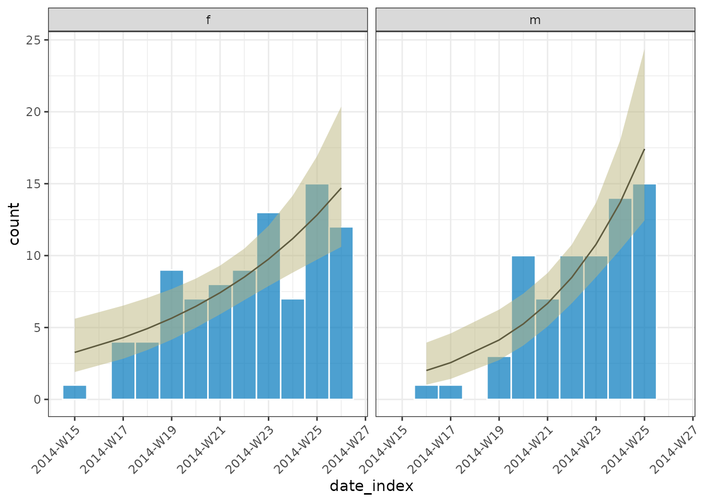

Example
To illustrate the trend fitting functionality of i2extras we will use the simulated Ebola Virus Disease (EVD) outbreak data from the outbreaks package.
Loading relevant packages and data
library(outbreaks)
library(i2extras)
#> Loading required package: incidence2
#> Loading required package: grates
library(ggplot2)
raw_dat <- ebola_sim_clean$linelistFor this example we will restrict ourselves to the first 20 weeks of data:
dat <- incidence(
raw_dat,
date_index = "date_of_onset",
interval = "week",
groups = "gender"
)[1:20, ]
dat
#> # incidence: 20 x 4
#> # count vars: date_of_onset
#> # groups: gender
#> date_index gender count_variable count
#> * <isowk> <fct> <chr> <int>
#> 1 2014-W15 f date_of_onset 1
#> 2 2014-W16 m date_of_onset 1
#> 3 2014-W17 f date_of_onset 4
#> 4 2014-W17 m date_of_onset 1
#> 5 2014-W18 f date_of_onset 4
#> 6 2014-W19 f date_of_onset 9
#> 7 2014-W19 m date_of_onset 3
#> 8 2014-W20 f date_of_onset 7
#> 9 2014-W20 m date_of_onset 10
#> 10 2014-W21 f date_of_onset 8
#> 11 2014-W21 m date_of_onset 7
#> 12 2014-W22 f date_of_onset 9
#> 13 2014-W22 m date_of_onset 10
#> 14 2014-W23 f date_of_onset 13
#> 15 2014-W23 m date_of_onset 10
#> 16 2014-W24 f date_of_onset 7
#> 17 2014-W24 m date_of_onset 14
#> 18 2014-W25 f date_of_onset 15
#> 19 2014-W25 m date_of_onset 15
#> 20 2014-W26 f date_of_onset 12
plot(dat, angle = 45, border_colour = "white")Modeling incidence
We can use fit_curve() to fit the data with either a
poisson or negative binomial regression model. The output from this will
be a nested object with class incidence2_fit which has
methods available for both automatic plotting and the calculation of
growth (decay) rates and doubling (halving) times.
out <- fit_curve(dat, model = "poisson", alpha = 0.05)
out
#> # A tibble: 2 × 9
#> count_variable gender data model estimates fitting_warning fitting_error
#> <chr> <fct> <list<ti> <lis> <list> <list> <list>
#> 1 date_of_onset f [11 × 2] <glm> <trndng_p> <NULL> <NULL>
#> 2 date_of_onset m [9 × 2] <glm> <trndng_p> <NULL> <NULL>
#> # ℹ 2 more variables: prediction_warning <list>, prediction_error <list>
plot(out, angle = 45, border_colour = "white")
growth_rate(out)
#> # A tibble: 2 × 10
#> count_variable gender model r r_lower r_upper growth_or_decay time
#> <chr> <fct> <list> <dbl> <dbl> <dbl> <chr> <dbl>
#> 1 date_of_onset f <glm> 0.137 0.0698 0.206 doubling 5.07
#> 2 date_of_onset m <glm> 0.240 0.146 0.341 doubling 2.89
#> # ℹ 2 more variables: time_lower <dbl>, time_upper <dbl>To unnest the data we can use unnest() (a function that
has been reexported from the tidyr package.
unnest(out, estimates)
#> # A tibble: 20 × 15
#> count_variable gender data model count date_index estimate lower_ci
#> <chr> <fct> <list<tibble[> <lis> <int> <isowk> <dbl> <dbl>
#> 1 date_of_onset f [11 × 2] <glm> 1 2014-W15 3.27 1.90
#> 2 date_of_onset f [11 × 2] <glm> 4 2014-W17 4.30 2.83
#> 3 date_of_onset f [11 × 2] <glm> 4 2014-W18 4.93 3.44
#> 4 date_of_onset f [11 × 2] <glm> 9 2014-W19 5.65 4.15
#> 5 date_of_onset f [11 × 2] <glm> 7 2014-W20 6.47 4.99
#> 6 date_of_onset f [11 × 2] <glm> 8 2014-W21 7.42 5.92
#> 7 date_of_onset f [11 × 2] <glm> 9 2014-W22 8.51 6.90
#> 8 date_of_onset f [11 × 2] <glm> 13 2014-W23 9.75 7.88
#> 9 date_of_onset f [11 × 2] <glm> 7 2014-W24 11.2 8.82
#> 10 date_of_onset f [11 × 2] <glm> 15 2014-W25 12.8 9.72
#> 11 date_of_onset f [11 × 2] <glm> 12 2014-W26 14.7 10.6
#> 12 date_of_onset m [9 × 2] <glm> 1 2014-W16 2.01 1.02
#> 13 date_of_onset m [9 × 2] <glm> 1 2014-W17 2.56 1.43
#> 14 date_of_onset m [9 × 2] <glm> 3 2014-W19 4.13 2.73
#> 15 date_of_onset m [9 × 2] <glm> 10 2014-W20 5.25 3.75
#> 16 date_of_onset m [9 × 2] <glm> 7 2014-W21 6.67 5.07
#> 17 date_of_onset m [9 × 2] <glm> 10 2014-W22 8.48 6.69
#> 18 date_of_onset m [9 × 2] <glm> 10 2014-W23 10.8 8.50
#> 19 date_of_onset m [9 × 2] <glm> 14 2014-W24 13.7 10.4
#> 20 date_of_onset m [9 × 2] <glm> 15 2014-W25 17.4 12.4
#> # ℹ 7 more variables: upper_ci <dbl>, lower_pi <dbl>, upper_pi <dbl>,
#> # fitting_warning <list>, fitting_error <list>, prediction_warning <list>,
#> # prediction_error <list>fit_curve() also works nicely with grouped
incidence2 objects. In this situation, we return a nested
tibble with some additional columns that indicate whether there has been
a warning or error during the fitting or prediction stages.
grouped_dat <- incidence(
raw_dat,
date_index = "date_of_onset",
interval = "week",
groups = "hospital"
)[1:120, ]
grouped_dat
#> # incidence: 120 x 4
#> # count vars: date_of_onset
#> # groups: hospital
#> date_index hospital count_variable count
#> * <isowk> <fct> <chr> <int>
#> 1 2014-W15 Military Hospital date_of_onset 1
#> 2 2014-W16 Connaught Hospital date_of_onset 1
#> 3 2014-W17 NA date_of_onset 2
#> 4 2014-W17 other date_of_onset 3
#> 5 2014-W18 NA date_of_onset 1
#> 6 2014-W18 Connaught Hospital date_of_onset 1
#> 7 2014-W18 Princess Christian Maternity Hospital (PCMH) date_of_onset 1
#> 8 2014-W18 Rokupa Hospital date_of_onset 1
#> 9 2014-W19 NA date_of_onset 1
#> 10 2014-W19 Connaught Hospital date_of_onset 3
#> # ℹ 110 more rows
out <- fit_curve(grouped_dat, model = "poisson", alpha = 0.05)
out
#> # A tibble: 6 × 9
#> count_variable hospital data model estimates fitting_warning
#> <chr> <fct> <list<t> <lis> <list> <list>
#> 1 date_of_onset Connaught Hospital [22 × 2] <glm> <trndng_p> <NULL>
#> 2 date_of_onset Military Hospital [21 × 2] <glm> <trndng_p> <NULL>
#> 3 date_of_onset other [20 × 2] <glm> <trndng_p> <NULL>
#> 4 date_of_onset Princess Christian M… [17 × 2] <glm> <trndng_p> <NULL>
#> 5 date_of_onset Rokupa Hospital [18 × 2] <glm> <trndng_p> <NULL>
#> 6 date_of_onset NA [22 × 2] <glm> <trndng_p> <NULL>
#> # ℹ 3 more variables: fitting_error <list>, prediction_warning <list>,
#> # prediction_error <list>
# plot with a prediction interval but not a confidence interval
plot(out, ci = FALSE, pi=TRUE, angle = 45, border_colour = "white")
growth_rate(out)
#> # A tibble: 6 × 10
#> count_variable hospital model r r_lower r_upper growth_or_decay time
#> <chr> <fct> <lis> <dbl> <dbl> <dbl> <chr> <dbl>
#> 1 date_of_onset Connaught Ho… <glm> 0.197 0.177 0.217 doubling 3.53
#> 2 date_of_onset Military Hos… <glm> 0.173 0.147 0.200 doubling 4.00
#> 3 date_of_onset other <glm> 0.170 0.141 0.200 doubling 4.09
#> 4 date_of_onset Princess Chr… <glm> 0.142 0.101 0.188 doubling 4.87
#> 5 date_of_onset Rokupa Hospi… <glm> 0.178 0.133 0.228 doubling 3.89
#> 6 date_of_onset NA <glm> 0.184 0.164 0.205 doubling 3.77
#> # ℹ 2 more variables: time_lower <dbl>, time_upper <dbl>We provide helper functions, is_ok(),
is_warning() and is_error() to help filter the
output as necessary.
out <- fit_curve(grouped_dat, model = "negbin", alpha = 0.05)
is_warning(out)
#> # A tibble: 5 × 7
#> count_variable hospital data model estimates fitting_warning
#> <chr> <fct> <list<t> <list> <list> <list>
#> 1 date_of_onset Connaught Hospital [22 × 2] <negbin> <trndng_p> <chr [2]>
#> 2 date_of_onset other [20 × 2] <negbin> <trndng_p> <chr [2]>
#> 3 date_of_onset Princess Christia… [17 × 2] <negbin> <trndng_p> <chr [2]>
#> 4 date_of_onset Rokupa Hospital [18 × 2] <negbin> <trndng_p> <chr [2]>
#> 5 date_of_onset NA [22 × 2] <negbin> <trndng_p> <chr [2]>
#> # ℹ 1 more variable: prediction_warning <list>
unnest(is_warning(out), fitting_warning)
#> # A tibble: 10 × 7
#> count_variable hospital data model estimates fitting_warning
#> <chr> <fct> <list<t> <list> <list> <chr>
#> 1 date_of_onset Connaught Hospit… [22 × 2] <negbin> <trndng_p> iteration limi…
#> 2 date_of_onset Connaught Hospit… [22 × 2] <negbin> <trndng_p> iteration limi…
#> 3 date_of_onset other [20 × 2] <negbin> <trndng_p> iteration limi…
#> 4 date_of_onset other [20 × 2] <negbin> <trndng_p> iteration limi…
#> 5 date_of_onset Princess Christi… [17 × 2] <negbin> <trndng_p> iteration limi…
#> 6 date_of_onset Princess Christi… [17 × 2] <negbin> <trndng_p> iteration limi…
#> 7 date_of_onset Rokupa Hospital [18 × 2] <negbin> <trndng_p> iteration limi…
#> 8 date_of_onset Rokupa Hospital [18 × 2] <negbin> <trndng_p> iteration limi…
#> 9 date_of_onset NA [22 × 2] <negbin> <trndng_p> iteration limi…
#> 10 date_of_onset NA [22 × 2] <negbin> <trndng_p> iteration limi…
#> # ℹ 1 more variable: prediction_warning <list>Rolling average
We can add a rolling average, across current and previous intervals,
to an incidence2 object with the
add_rolling_average() function:
ra <- add_rolling_average(grouped_dat, n = 2L) # group observations with the 2 prior
plot(ra, border_colour = "white", angle = 45) +
geom_line(aes(x = date_index, y = rolling_average))
#> Warning: Removed 1 row containing missing values (`geom_line()`).